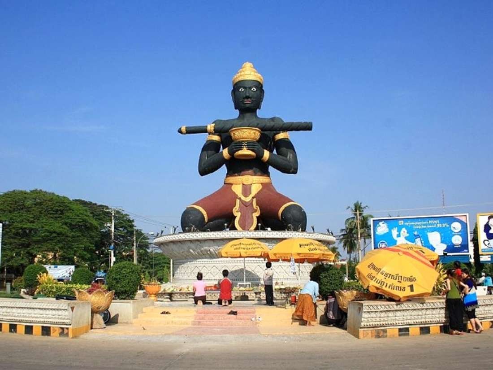

 ខេត្តបាត់ដំបង គឺជាខេត្តមួយនៅភាគពាយ័ព្យនៃព្រះរាជាណាចក្រកម្ពុជា។ ខេត្តបាត់ដំបង មានទីប្រជុំជនធំនៅក្រុងបាត់ដំបង។ ខេត្តបាត់ដំបងមានព្រំប្រទល់ ខាងជើងជាប់ខេត្តបន្ទាយមានជ័យ ខាងកើតជាប់ខេត្តសៀមរាបនិងបឹងទន្លេសាប ខាងត្បូងជាប់ខេត្តពោធិ៍សាត់ ខាងលិចជាប់ខេត្តប៉ៃលិននិងខេត្តច័ន្ទបុរី(ប្រទេសថៃ)។បើតាមសិលាចារិកថ្មប្រាសាទដែលយើងមាន និងបានរកឃើញរហូតសព្វថ្ងៃ នៅមុនសម័យ និងសម័យអង្គរគេពុំបានឃើញចែងអោយយើងដឹងថា តើសម័យនោះ មាន ភូមិស្រុកណាមួយដែលមានឈ្មោះ បាត់ដំបងនោះទេ ។ ប៉ុន្តែយើងក៏មិនហ៊ានសន្និដ្ឋានថា ឈ្មោះបាត់ដំបង នេះមានប្រើឬមិនប្រើក្នុងសម័យនោះដែរ ។ ប៉ុន្តែក្នុងសម័យអង្គរនិងក្រោយអង្គរតាមឯកសារមហាជនខ្មែរមាន ប្រើឈ្មោះស្រុកបាត់ដំបង។ ហេតុអ្វីបានជាហៅឈ្មោះបាត់ដំបង ប្រវត្តិសាស្ត្រសរសេរលើសិលាចារិកមិនបានឆ្លើយឲ្យដឹងឡើយ គឺមានតែនៅក្នុងរឿងព្រេងប៉ុណ្ណោះគឺរឿងតាដំបងក្រញូងដែលខ្មែរ យើងយល់ថាជារឿងកើតមានតាំងពីសម័យអង្គរដែលបានពន្យល់ពីដើមហេតុ ដែលនាំអោយយើងហៅឈ្មោះបាត់ដំបងឬអូរដំបង ។ ឯឈ្មោះ ព្រះដំបង គឺស្តេចរាមាទី១បានកំណត់ឲ្យហៅឈ្មោះភូមិសង្កែថាជា ព្រះដំបង ។កាលពីមុនសម័យអង្គរ និងសម័យអង្គរភាគខាងលិច និងភាគពាយ័ព្យនៃ បឹងទន្លេសាបគឺជាដែនដី អមោឃបុរៈនិងជាដែនដី ភិមៈបុរៈ ។ នៅក្នុង សម័យអង្គរដែនដីឬភូមិភាគអមោឃបុរីមានការរីកចំរើនខ្លាំងដោយសារ ដីមានជីវជាតិល្អ អាចដាំដំណាំស្រូវនិងបន្លែផ្លែឈើផ្សេងៗបាន ប្រកបដោយទិន្នផលល្អប្រសើរ ។ ប្រជាពលរដ្ឋខ្មែរជំនាន់នោះមករស់នៅភូមិភាគនេះ ច្រើន ជាភស្តុតាង បង្ហាញ គឺមានប្រាសាទបុរាណជាច្រើនសន្ធឹកសន្ធាប់ក្នុងតំបន់នេះ ។ ប៉ុន្តែប្រាសាទបុរាណទាំងនោះ រលំបាក់បែកបាត់បង់ស្ទើរតែទាំងអស់ លើកលែងតែប្រាសាទបាណន់ ប្រាសាទឯកភ្នំ ប្រាសាទបាសែត ប្រាសាទស្នឹង ប្រាសាទបន្ទាយទ័យ ប្រាសាទបន្ទាយឆ្មារ ។ល។ ដែលនាម៉ឺនសព្វមុខមន្ត្រីនិងប្រជារាស្ត្រជំនាន់នោះបានកសាងឡើង សំរាប់ជាទីសក្ការៈបូជាដល់ព្រះអាទិទេពនិងទេវៈផ្សេងៗ ខាងព្រហ្មញ្ញសាសនា ឬក៏ដល់ព្រះពុទ្ធ និងពោធិសត្វផ្សេងៗខាង ពុទ្ធសាសនា។ នៅសតវត្សរ៍ក្រោយមកទៀត ដែនដីខេត្តបាត់ដំបង ត្រូវបានទទួលរងគ្រោះយ៉ាងធ្ងន់ធ្ងរពីចំបាំងរាំងជល់ ដោយការឈ្លានពានពីសំណាក់ពួកសៀមតាំងពីសតវត្ស ១៥-១៦-១៧-១៨ ធ្វើអោយជីវភាព រស់នៅរបស់ប្រជាជនបាត់ដំបងជំនាន់នោះធ្លាក់ក្រលំបាកព្រាត់ប្រាស និរាសគ្រួសារទ្រព្យសម្បិត្តផ្ទះសម្បែងគួរអោយខ្លោចផ្សារ។ នៅចុងសតវត្សទី១៨ ដល់ ដើមសតវត្សទី២០ បាត់ដំបងក៏ធ្លាក់នៅក្រោម អំណាចត្រួតត្រាជិះជាន់របស់ពួកសៀមអស់រយៈពេលជាងមួយសតវត្សរ៍ ដែលគ្រប់គ្រងដោយអំណាចគ្រួសារ ចៅហ្វាបែនក្រោយមកគេដាក់ឈ្មោះថា " ត្រកូលអភ័យវង្ស "អស់៦តំណរហូតដល់ឆ្នាំ១៩០៧ ។